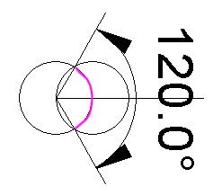

Consider 2 intersecting 120 Polyhedra.
|
|
| 2 Intersection 120 Polyhedra |
The intersection is such that all the vertices at the interescting plane "A" match and such that a vertex of one of the 120 Polyhedra is at the center of volume of the other 120 Polyhedron ("B" and "C").
| Vertices Match Just Right |
We can rotate the image a little bit and trace out the resulting Vesica Pisces.
| Vesica Pisces in Intersecting 120 Poly |
Actually, there are 2 Vesica Pisces at 90° to each other.
| 2 Vesica Pisces in Intersecting 120 Poly |
This is all a result of the 120 Polyhedra being constructed from Octahedra.
| Intersecting Octahedra in Vesica Pisces position |
Note that the part of the V.P. circle inside the other circle spans 120°.
|  |
| Arc measurement inside V.P. |
If, for some reason, we can subtract this part of the whole circle we are left with a 240° arc. For a V.P., there are 2 circles. From each we remove the 2 inner arcs of 120°.
| Inner Arcs removed from V.P. |
But we just showed there are 2 Vesica Pisces in the intersecting 120 Polyhedron.
So we have 4 arcs of 240° each.
But this is just a description of the Pattern Knot.
See Constructing The Pattern From A Tetrahedron in which I showed the construction of the Pattern knot from 4 circles drawn on the 4 faces of a Tetrahedron. For each circle, an arc of 120° is removed.
I had hoped that these thoughts on the Vesica Pisces in the 120 Polyhedron might lead to a new way to construct the Pattern knot, but I don't see how.
I also thought this was all new, but I find that I did something similar sometime ago with the 144 Polyhedron. See a Note I wrote to Lynnclaire some time ago.
Usage Note: My work is copyrighted. You may use my work but you may not include my work, or parts of it, in any for-profit project without my consent.